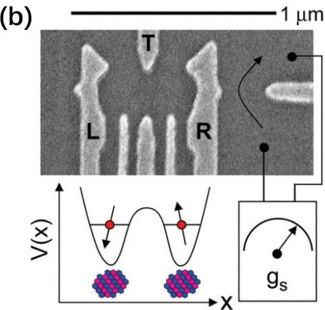
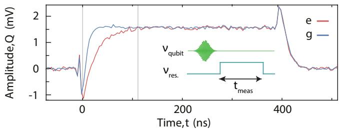
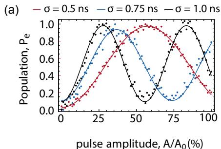
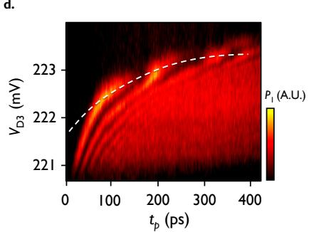
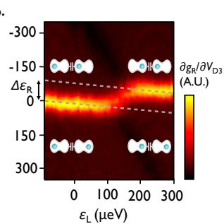
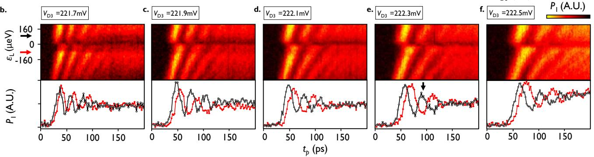
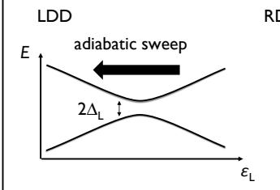

物理图像与编码
电荷量子比特（charge qubit）是半导体双量子点最直接的二能级编码：将最后一个电子的两种空间占据——左量子点 、右量子点 ——选作计算基。体系被限制在单电子电荷态（或更一般地在最近邻两个电荷态）的子空间内，由栅压维持失谐在零点附近并保留左右隧穿通道，由此构成一个最低阶近似的两能级系统。
双量子点中共有 、、、 四种电荷组态。当调节栅压使前一组态在能量上完全被排斥、只剩下 与 两者可比拟时，电荷量子比特的编码空间自然形成。这正是在介绍 Divincenzo 判据时所采用的图像：、等具体实验也都选择在这条”反交叉线”附近操作比特。
电荷量子比特具有几项先天优势：
- 电学可读：基矢 、 的电荷位置不同，直接影响近邻QPC 电荷传感或射频反射仪的电导，测量”对比度好”——这点与自旋比特必须依赖自旋阻塞才能把自旋状态映射回电荷态不同。
- 电学可操控：门电极即可调节失谐与隧穿耦合，无需外加微波磁场。
- 强电偶极：左右点相距约 100 nm 量级，等效电偶极矩 较大，是天然能与微波谐振腔匹配的”原子”。
代价是对电荷噪声极为敏感：基矢本身就是电荷占据分布，门电极电压的任何涨落都会直接移动失谐量 。在 GaAs 门控量子点上，直接给出”GaAs 上电荷量子比特的退相干时间只能保持在 100 ps 量级，远不够做 10⁵ 个门操作”的判断——电荷量子比特的核心物理挑战即由此而来。

电荷量子比特（按电荷位置编码）与 S–T 量子比特（按双电子自旋态编码）卡通图
理论模型
最小二能级哈密顿量
在仅保留 、 两个电荷态时，二能级哈密顿量在电荷基矢下可写为
其中 是左右点的电化学势差（即”失谐量”）， 是左右态间的隧穿耦合强度。这是Landau–Zener 跃迁、Rabi 振荡、LZS 干涉等动力学讨论的统一出发点。
对角化给出本征能
其中混合角（hybridization angle）定义为
描述本征态在本征基矢与电荷基矢之间的相对取向：
反交叉最小能隙 在 处取到；任意失谐下的能隙为 。这一能隙正是比特跃迁频率 的来源。
将上式作为两能级体系的标准形式（式 5.1、5.14）反复使用；同样把它作为电荷比特讨论的起点；在式 3-2 中也明确写出 （其中 ），并基于此讨论光子辅助隧穿、拉莫振荡、LZS 干涉等动力学。
含时驱动与 Bloch 球表述
含时失谐 把哈密顿量变为 。将 Bloch 矢量 定义为期望值 ，演化方程为
其中 是有效磁场。每当脉冲把失谐拉回 ， 沿 方向，比特态矢量绕 轴旋转一个角度 ；脉冲幅度不为零时， 在 – 平面倾斜，演化同时具有 分量的相位累积。整套操控可分解为
并由此组合出任意的单比特幺正变换。在式 3-5、3-6 与 在式 5.15 中明确写出 、 的矩阵形式，并把它们作为 LZS 操控与脉冲驱动的通用构造模块。
周期驱动下的 Floquet 描述
当 为周期函数时，哈密顿量满足 ，。Floquet 定理给出准静态本征态 ，其中 ， 是准能量。在旋转波近似（）下，周期驱动相当于在电荷基矢上附加一个有效 Rabi 频率 ，从而把电荷比特推进强驱动非线性区——这正是第 4–5 章中周期性驱动双量子点产生腔光子增益、研究杂化系统 Floquet 态的理论出发点。
操控方案
Landau–Zener 跃迁与 LZS 干涉
将系统从 （远离反交叉一侧）缓慢扫过 的过程，由Landau–Zener 跃迁的非绝热概率
刻画，其中 是能级间隔的变化率。绝热–脉冲模型（adiabatic–impulse model）把穿过反交叉等价为一次”分束”——离开反交叉后两个本征态积累不同相位，再次穿过反交叉时发生干涉。由绝热相位
可以整理出三角波驱动的旋转角与相位（式 5.16–5.18，式 3-8、3-9）：
只要合适选择三角波幅度 与上升时间 ，LZS 过程就能把任意初态转到 Bloch 球上的任意目标态，构成与 Rabi 振荡等价的”普适旋转门”。在第 5 章用一整章给出该方案的完整推导，并在第 6 章进一步用此脉冲实现对 Kibble–Zurek 机制的量子模拟。
矩形脉冲与 Larmor 振荡
理想矩形脉冲把电子”瞬间”拉到反交叉点再保持 时间再返回。绝热地把电子送到 相当于绕 轴旋转 ，停留 时间使 Bloch 矢量在 – 平面内绕 轴自由进动角度 ，回落后再绕 轴 回到电荷基矢。整个过程在 、 占据概率之间产生周期振荡，振荡频率即为 ——这就是第 3.3 节展示的”拉莫振荡”（Larmor oscillation）。
微波驱动与 Rabi 振荡
对失谐施加一个微波 ，并在简并点附近 () 共振驱动，比特在 、 之间的占据概率按式 3-12
振荡，振荡频率即有效 Rabi 频率 。在引用的 Si/SiGe 双量子点实验中（Eriksson 组），微波频率 GHz 的 Rabi 振荡清晰可见，并拟合得到退相干时间 ns——这是早期电荷比特相干性的代表性数字。
在两个 微波脉冲之间插入等待时间 ，构成 Ramsey 序列；进一步在 中点加入 相位翻转脉冲，则得到 Hahn 回波，能拟合得到去低频噪声影响后的 。
全微波操控与时间域色散读出：经腔接口
上文的微波驱动仍需本地栅把微波送到双量子点、读出另靠电荷传感器。Scarlino 等人 2019 年在 GaAs/AlGaAs 电荷比特–高阻抗 SQUID 阵列腔系统（腔线宽 过耦合、共振时 、）演示了全微波链路：合成微波脉冲经腔驱动比特跃迁，读出用比特态对腔频的色散频移完成——控制与读出共用同一条腔接口。
腔内光子数的 ac-Stark 标定。色散耦合使比特频率随腔内平均光子数移动（ac-Stark 频移）：
其中 是零光子极限的比特频率、 是腔内平均光子数、 与 分别是耦合强度与腔–比特失谐。用独立标定的 与 ，从两 tone 谱中比特频率随腔输入功率的线性移动即可反标出 ——这是量子点 cQED 实验里最常用的腔光子数定标手段（读出功率是否进入单光子区由此判定）。

ac-Stark 频移标定腔内光子数：DQD 处于 δ=0、腔驱动频率固定在 ν_r=5.070 GHz（2t=3.71 GHz、2g/2π=75 MHz），横轴为腔输入功率、纵轴为两 tone 谱测得的比特频率——线性移动拟合（实线）给出腔内光子数 n_r 随输入功率的对应（顶轴）。图源：Scarlino et al. (2019), Fig. 2。
时间域色散读出。先定出态依赖的腔频移 ：比特留在基态（蓝迹）与用连续 tone 饱和成完全混合态（，橙迹）两种情况下测腔反射系数，比较腔频得 。随后即可做脉冲化读出：读出点选在腔响应最陡的频率上，正交分量 随时间分离出两个比特态，典型读出时间 （含平均）。

时间域色散读出：(a)(b) 比特处于基态（蓝）与饱和混合态（橙）时的腔反射幅值与相位——两者腔频差即色散位移 χ/2π≈5 MHz（g/2π≈55 MHz）；红虚线为时间域测量选定的读出频率。(c) 读出阶段 Q 正交分量随时间的响应：无脉冲（|g⟩，蓝）与施加 π 脉冲（|e⟩，红）后清晰分离，典型读出时间 400 ns。图源：Scarlino et al. (2019), Fig. 3。
相干性结果。全微波链路下（、）：最快 脉冲用高斯包络标准差 （AWG 最大幅度 ），脉冲期间平均 Rabi 频率高达 ；Ramsey 自由感应衰减 、能量弛豫 、Hahn 回波 —— 表明纯退相干主导，回波只把寿命翻倍说明还有快于序列时间的涨落。低功率谱线宽度给出 （），比同型 GaAs 器件此前报告低约 10 倍、已接近非掺杂 SiGe 电荷比特水平——把操控与读出都搬到腔接口（减少本地电极上的强微波与开关噪声）是相干性改善的候选原因之一。器件与耦合细节见电荷–光子耦合。
光子辅助隧穿与光场耦合
把失谐视为量子化的微波光子场驱动时，电子可以”借”或”还”整数个光子能量在阻塞区外的失谐点上发生光子辅助隧穿（PAT）。令光子频率为 ，则光子辅助的隧穿条件为
其中 是栅压到能量的杠杆臂（lever arm）。改变微波频率测量一阶峰位置即可反推 与 ——在式 3-3 中给出该关系，并实测得到中间门电极电压 V 时 GHz、加大到 V 时降到 GHz。
把这一思想与电路量子电动力学（cQED）结合，光子不再是外加微波而是腔内真空场，双量子点与腔的相互作用即由电荷–光子耦合主导。
参数量级
下表汇总典型实验体系中的参数量级，覆盖本节引用的论文与延伸文献：
| 量 | 典型值 | 来源 / 备注 |
|---|---|---|
| 点间隧穿耦合 | 几 GHz 至 30 GHz | ： V 门压下 GHz |
| （GaAs 双点，特定工作点） | GHz | 第 5 章实测值 |
| 反交叉最小能隙 | ，约 – | 即 |
| 比特跃迁频率 | – GHz | 取决于 与 |
| 微波 Rabi 频率 | – GHz | Si/SiGe 1 GHz |
| 自由感应衰减 | – ns（GaAs、Si/SiGe 早期） | ns， |
| 自旋回波 | 数 ns（GaAs）、 ns 量级（Si/SiGe、Si-MOS） | 平台相关 |
| 杠杆臂 | – | 取决于电极几何 |
| 电荷比特–腔耦合 | MHz（首例强耦合）至 MHz，最大 MHz | 第 1 章综述 |
| 比特退相干 | – MHz | 决定强耦合判据 |
| 腔耗散 | – MHz（高阻抗腔） | GHz、 MHz |
| 工作温度 | mK（电子温度） | mK |
| 工作失谐 | $ | \varepsilon |
| Si/SiGe 四量子点 Larmor/Ramsey | 约 10 GHz（ ps）/ 56 GHz（ ps） | Ward 2016 |
| Si/SiGe 双 DQD 电容耦合 | 约 75 µeV ≈ 18.3 GHz；条件 π 翻转约 80 ps | Ward 2016 |
| Si/SiGe 杠杆臂 | 约 135 µeV/mV（LZS 频率斜率） | Ward 2016 |
| GaAs 全微波操控（经腔） | 最快 π 脉冲 σ≈0.25 ns（平均 Rabi ~800 MHz）； ns、 ns、 ns | Scarlino 2019 |
| GaAs 全微波退相干率 | MHz（ ns），比此前 GaAs 报告低约 10 倍 | Scarlino 2019 |
| 色散读出位移/时间 | MHz（g/2π≈55 MHz）； ns | Scarlino 2019 |
实验特征
测量与读出
电荷量子比特的 、 占据概率最直接的读出通道是近邻QPC 或单电子晶体管（SET）。电子在左点时 QPC 电流减小，反之增大，由此反推比特态。这一”直接读出”是电荷比特相对自旋比特的天然优势—— 1.4.3 节即强调：“对电荷量子比特来说，测量是相对简单的事情，因为 0 和 1 两个量子态直接与电荷分布相关。” 工作在低频段时可加锁相放大读取，工作在 MHz 量级动态信号时则需要射频反射测量以获取足够带宽。
也可以把比特耦合到微波谐振腔上做色散读出：比特跃迁频率 与腔频 失谐 时，比特使腔频移动 并附加额外耗散，由反射或透射相位即可推比特态。JC 模型在色散极限下给出此结果。
相干性来源与退相干
电荷比特的退相干主要来自电荷噪声——栅压的 涨落直接调制失谐 ，导致相位累积的不确定。对 GaAs 双量子点，直接给出”退相干时间只能保持在 100 ps 量级”的悲观判断；对 Si/SiGe，文献报告的 Rabi 振荡拟合给出 ns，仍只允许约 10 个门操作。
缓解办法有几条路径：
- 工作点选取：在 区，比特态与 、 几乎重合，但此处斜率 大，电荷噪声影响强； 附近， 是”平点”（sweet spot），一阶不敏感，但 Larmor 频率被隧穿耦合涨落而非失谐涨落限制。
- 动力学解耦：Hahn 回波、CPMG、动态解耦脉冲把低频 噪声的高频分量平均掉，提升 至 的数倍至一个量级。
- 材料平台：Si/SiGe 与 Si-MOS 的核自旋天然丰度低于 GaAs 的三种同位素，外延/氧化界面更”安静”，自旋比特相干时间可延长到百微秒量级。电荷比特也因此受益——尽管其优势不及自旋比特显著。
- 杂化编码：把电荷分量适度稀释到自旋/轨道自由度中，参见杂化量子比特。
与腔的耦合：色散、强耦合与超强耦合
电荷比特的大电偶极矩使之天然能与腔电场耦合。电荷–光子耦合给出全局耦合强度
其中 是混合角， 是杠杆臂， 是腔的特征阻抗， 是电阻量子。在 附近 ，耦合达到最大值 。提高 （使用高阻抗腔或SQUID 阵列腔）成为突破 强耦合判据的关键：2011 年 Petta 组首次在电荷比特–腔体系看到真空 Rabi 劈裂时 MHz；2017 年 Wallraff 组使用 SQUID 阵列腔把耦合提高到 MHz（ 第 1 章 1.5 节综述）。更进一步，Scarlino 等 2022 年通过 In-situ 调节 实现 ，进入JC 模型失效的超强耦合（ultrastrong coupling）区。
电荷比特在 cQED 中的另一重要应用是作为增益介质。把双量子点放在某一 点并施加周期驱动，可以产生粒子数反转，使电荷比特向腔发射微波光子—— 第 4 章报道了 GaAs 双量子点驱动下的腔透射幅值增益，并在第 5 章中研究了周期驱动双点–腔耦合系统的 Floquet 谱。
比特间的电容耦合与多比特门
两个电荷比特通过电极间的电容耦合到一起，可以实现两比特门。两个比特各自由 描述，整体哈密顿量增加一项
其中 是两个比特分别占据”同位”与”异位”两种组态时的库仑相互作用能之差。 第 4 章给出 （式 4-5），并实验上演示了振幅控制与相位控制两种 CNOT 门 方案，保真度 68%（与当时国际半导体双电荷比特最好水平相当）。三电荷比特阵列上则可演示 Toffoli 门（ 第 5 章）。
更长远地，可以在两个电荷比特之间夹一个共享的高阻抗腔，由腔光子介导实现长程耦合—— 第 1 章 1.5 节综述了相关进展。
Si/SiGe 四量子点：双轴控制与条件动力学的实验基准
电荷比特在硅平台上的相干操控基准由 Ward 等人在非掺杂 Si/SiGe 线性四量子点上确立（右双点 RDD 作被控比特、左双点 LDD 作条件比特，两侧量子点传感器读出）。双轴控制用非绝热失谐脉冲（AWG 上升时间 40 ps）实现：把失谐突然拉到 ，此处哈密顿量 （ 为隧穿耦合），态以 Larmor 频率 演化——X 轴旋转；Ramsey 序列（两个 脉冲夹自由演化 ）则以 绕 Z 轴进动，。实测 Larmor 振荡约 10 GHz、 ps；Ramsey 条纹 56 GHz、 ps；LZS 干涉频率对栅压的斜率给出杠杆臂 。
电容耦合的实测标定直接扫两个失谐量：LDD 中单电子从左点移到右点时，RDD 极化线整体平移
这就是两比特门可用的失谐调制深度。在该耦合下演示电荷态条件 LZSM 干涉：LDD 处于 或 基态时 RDD 的 LZS 振荡频率相差 7–10 GHz，条件 π 相位翻转最快仅需约 80 ps——两比特 CPHASE 门的物理相互作用由此定标（单双轴旋转也在 10 GHz 量级，快普适逻辑门在原理上可行）。此实验中 LDD 本身的相干控制尚未实现，完整两比特门留待重叠栅几何等后续改进。

非掺杂 Si/SiGe 电荷比特的双轴控制：非绝热脉冲拉到 ε=0 产生绕 X 轴的 Larmor 振荡（左，约 10 GHz、T2≈150 ps），Ramsey 序列给出绕 Z 轴的相位进动（条纹频率 56 GHz）；右图为 LZS 干涉频率对栅压的线性拟合，斜率即杠杆臂 135 µeV/mV。图源：Ward et al. (2016), Fig. 2。*
双 DQD 电容耦合的直接测量：同时扫描左右失谐得到耦合电荷稳定图，LDD 单电子左移/右移使 RDD 极化线（灰虚线）平移 Δε_R≈75 µeV≈18.3 GHz——两比特门可用的失谐调制深度。图源：Ward et al. (2016), Fig. 3(b)。
电荷态条件 LZSM 干涉：扫描 LDD 失谐（纵轴）使左双点 excess 电荷在 (0,1)L 与 (1,0)L 间切换，RDD 的 LZS 干射图样随之发生突然的频率跳变——单电子的运动直接写进右比特的相位。图源：Ward et al. (2016), Fig. 4(b–f)。
条件相位速率定标：(0,1)L（黑）与 (1,0)L（红）两种 LDD 基态下 RDD 的 LZS 干涉频率之差达 7–10 GHz，对应条件 π 相位翻转约 80 ps——条件 CPHASE 门的物理上限。图源：Ward et al. (2016), Fig. 4(g)。与其他概念的关系
电荷量子比特是双量子点所有编码方案中最直接的一种。它的物理基础由隧穿耦合、电化学势（失谐 ）和充电能共同支撑；电荷稳定图的蜂窝结构给出了它的”工作地图”，库仑阻塞则在蜂窝图远离反交叉的格子里决定了电荷态的稳定性。
动态层面，比特的相干控制直接调用Landau–Zener 跃迁（单次穿过反交叉的分束）与LZS 干涉（多次穿过反交叉的相位累积）；时间域上的脉冲序列则通过Rabi 振荡与Ramsey 干涉给出频域的相干谱。微波与比特失谐的耦合进一步引出光子辅助隧穿与电偶极自旋共振（EDSR）的对应表述。
电荷比特对外的耦合通道有两类：第一类是电极间的直接电容耦合，由交换库仑相互作用实现两比特门或多比特阵列；第二类是通过微波谐振腔的电偶极耦合，对应电荷–光子耦合与JC 模型物理。这两类通道的强弱分别由几何距离与腔阻抗决定。
由于电荷比特的电学敏感，其杂化与扩展编码具有现实意义：
- 单态–三重态量子比特把电荷位置编码为 单态与三重态之间的相对关系，保留了部分电荷读取能力但利用自旋塞曼能作为主要自由度，相干时间更长。
- 杂化量子比特在三电子组态中同时含自旋与电荷分量，保留电学快速操控优势的同时把失谐一阶的电荷噪声抑制到二阶。
- 单自旋量子比特几乎不含电荷分量，相干时间最长但操控依赖微波磁场或 EDSR。
- 空穴自旋量子比特、共振交换量子比特等也可看作电荷比特的近亲，只是在不同自由度间做了取舍。
参考文献
- Scarlino, P., van Woerkom, D. J., Stockklauser, A., Koski, J. V., Collodo, M. C., Gasparinetti, S., Reichl, C., Wegscheider, W., Ihn, T., Ensslin, K., Wallraff, A. All-Microwave Control and Dispersive Readout of Gate-Defined Quantum Dot Qubits in Circuit Quantum Electrodynamics. Physical Review Letters 122, 206802 (2019). DOI: 10.1103/physrevlett.122.206802；arXiv:1711.01906（QAtlas 缓存：1711.01906）。
- 电荷比特作为量子点最早可全电控编码的框架：van der Wiel et al., RMP 74, 801 (2002)；现代综述见 Burkard et al., RMP 95, 025003 (2023)。
- Ward, D. R. et al. State-conditional coherent charge qubit oscillations in a Si/SiGe quadruple quantum dot. npj Quantum Information 2, 16032 (2016). DOI: 10.1038/npjqi.2016.32；arXiv:1604.07956（QAtlas 缓存：1604.07956）。
完整文献库（含各篇站内全文页）见 参考文献库。